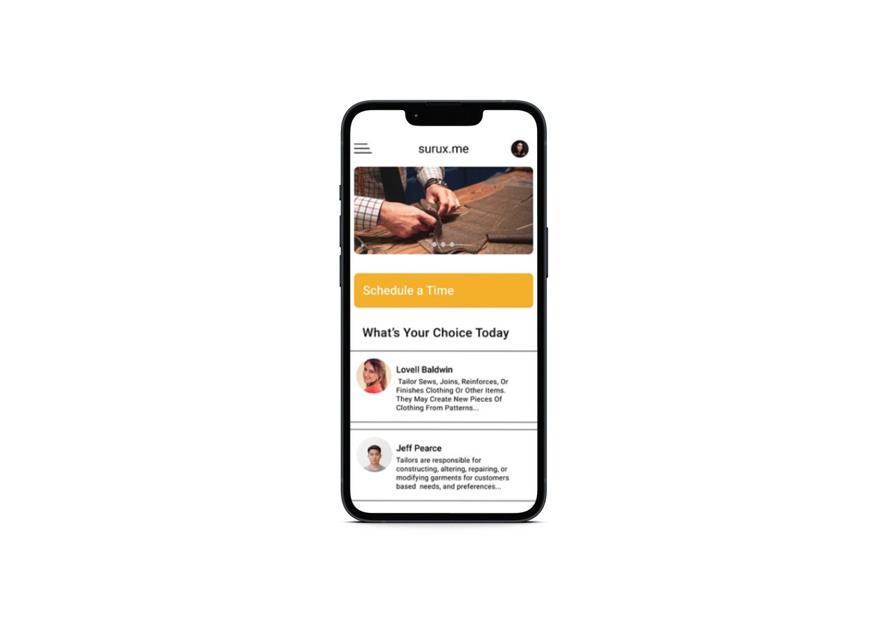
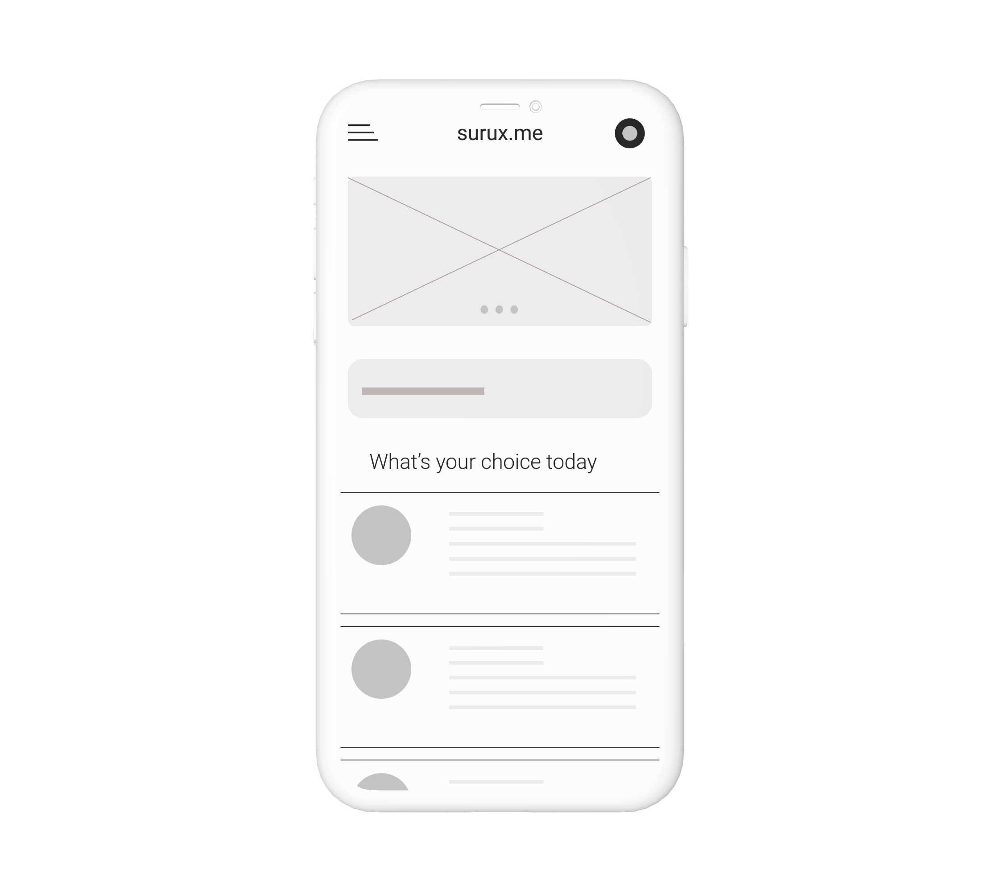
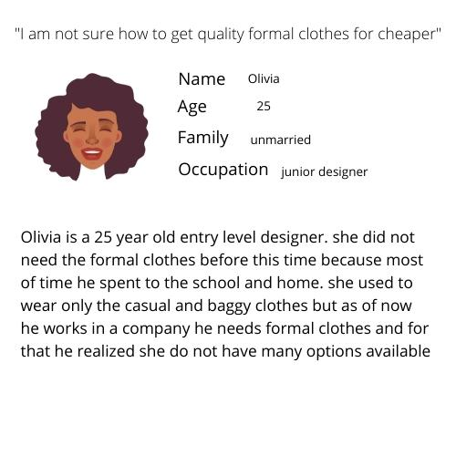
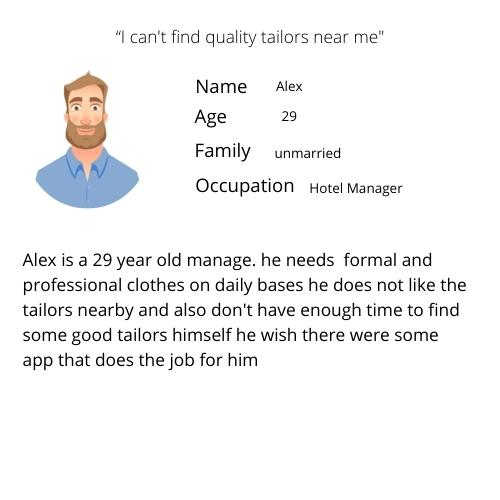
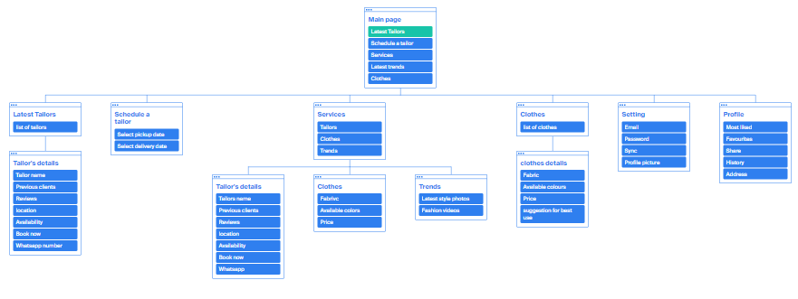
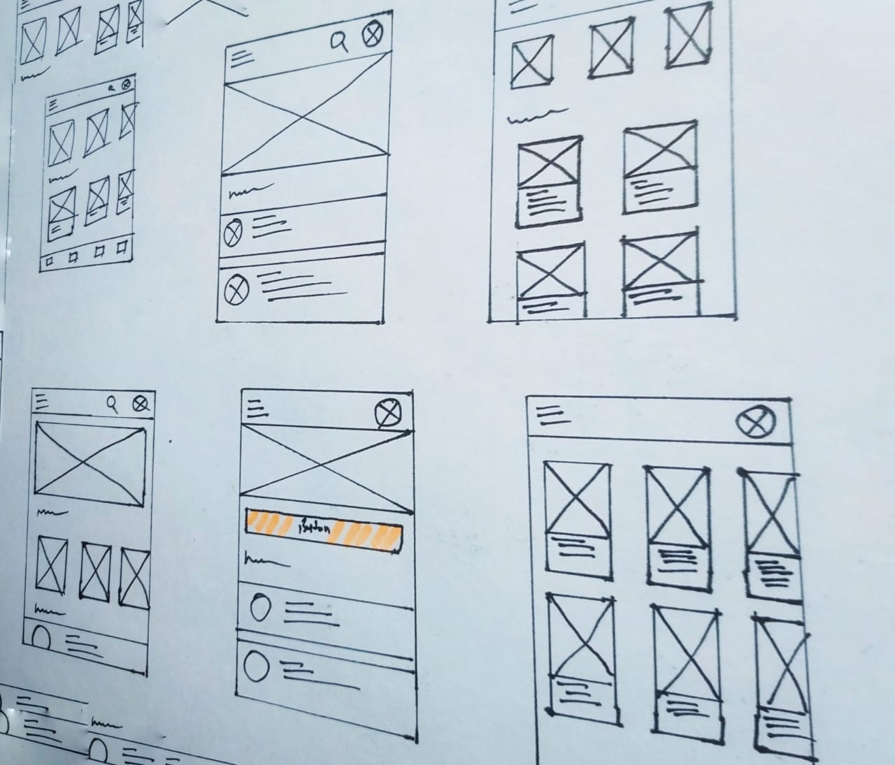

Project vision
sew is a Tailor discovery service that primarily allows for users to search for tailors with the press of the button With current tailor applications, the data visualization and sharing of reviews are either non-existent, very limited, or extremely outdated. Sew aims to fix that by bridging the gap between potential users themselves
Challenges
- Design a simple interface for the familiar and undamiliar user
- Provide a seamless booking process
- Create a minimalistic UI while keeping products as the focus
- Allow users to see background of tailor
- Allow users to find tailor near them

Kickstart
Starting off, I asked myself a few initial questions. Who is our primary user? What kind of goals do they have? Why would someone want to use this application? Just how large of a scope do I want this project to be? After interviewing four participants to establish archetypes later on, it became evident that the goals they wanted to accomplish all fell within the same categories; finding out more about their clothing habits & identifying more of the clothes they like.

competitive analysis
In order to construct a concise and solid foundation for Sew, I had to venture out and see what the prominent tailor applications were already doing and what user goals they were not reaching. I evaluated several features deemed vital from user surveys and identified which ones Sew could capitalize on to have a leg up over other applications.
I found that none of the main competitors offered user profiles for users.
darzi on call offers a lot of variety but ux and user flow is not upto the mark.



Information Architecture

P&P Wireframer
Before moving onto high fidelity wireframes and mocks, I wanted to get a feel for what the core of the app would look like when put in front of me.

×